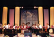

Click here to view picture of the concert
|
 Third Anniversay Concert of the Edmonton Chinese Philharmonica, June 13, 2004 The ECP is holding its Third Anniversary concert on June 13, 2004, at the Provincial Museum Theatre. The concert will be given by the Edmonton Chinese Philharmonica and will be joined by the Chinese Orchestra of the Hong Kong Leung Sing Tak Primary School as our guest. The HK Leung Sing Tak Primary School Chinese Orchestra had just obtained the gold medal in the 2003 Hong Kong Youth Music Show. A Hong Kong Radio TV show documented the activities of the Leung Sing Tak Primary School Orchestra in a program called "Shaolin of Chinese Music" . The concert shall be conducted by the famous composer and conductor Mr. Ng Chiu Shing from Hong Kong. The concert will take place in the Alberta Provincial Museum Theatre in Edmonton, 7:30pm Sunday June 13, 2004. |
| See larger poster of the concert See Program Repertoire |
「山青水秀峰羞b」音
假如大家有d趣多了解中民族音罚H身w民族逢四菲鞯男Ч，F在有一大好C，本市鄢敲F所ek的「山青水秀峰羞b」音，是一在勖耦D市y得一的、由本地中民族音Fw所k的雒费葑，有各民族菲鞯莫奏和合奏，K邀到香港指]家浅傧壬，c及名M香港的梁省德小W中F，偕同鄢敲F於「山
青水秀废b」音中演出。 |
{kind=link}
香港梁省德小W中F是一很有水平的中F，於2003年底曾s@香港青年R演中F比金；去年年底香港台部u作的「M童心中情」第一集「飞倭帧，便透^校W生瞰媚同W作第一身旁述，直接向大家介BF小小年o的FTχ返母邢牒腕w。
程致毅 - 中民族菲髌 - 橐而 (This article is only available in Chinese)
勖耦D介B Introuction
to Edmonton
省博物^ Provincial
Museum of Alberta
From Edmonton -
Jasper National Park
|
|
|
嘉e:香港I指]家浅傧壬
客席指] Guest conductor for the concert: Famous Hong Kong composer and conductor Mr. Chiu Shing Ng |
|
 |
Percussion group of the Edmonton Chinese Philharmonica - demonstrating at the A-Channel TV Station, 8:45 am, June 8, 2004 |
|
演奏嘉e:香港梁省德小W中F Hong Kong Leung Sing Tak Primary School Orchestra |
|
 |
|
|
Above: The Edmonton Chinese Philharmonica performing at the Edmonton
Northland Agricom, January 2004 - celebrating the Chinese New Year of the
Monkey, 鄢敲F
|
|
|
演奏嘉e:香港梁省德小W中F Guest: Hong Kong Leung Sing Tak Primary School Orchestra Visiting Tai Chong, China |
|
|
演奏嘉e:香港梁省德小W中F Guest: Hong Kong Leung Sing Tak Primary School Orchestra |
|